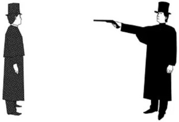
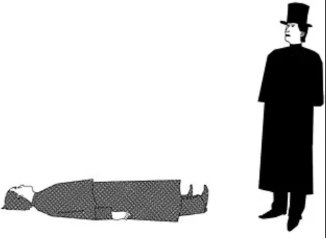

Lesson Thirty-Two - –£—Ä–æ–∫ 32
–ê–≤—Ç–æ—Ä: –°–µ—Ä–≥–µ–π –õ–∏—Å
Какое сегодня число? Месяцы. Глагол Suppose и ‘предположительные’ конструкции
–ö—Ç–æ –∑–Ω–∞–µ—Ç, –∫–∞–∫–æ–µ —Å–µ–≥–æ–¥–Ω—è —á–∏—Å–ª–æ? –ê —Ç–æ –º—ã –Ω–µ–º–Ω–æ–≥–æ –∑–∞—Ä–∞–±–æ—Ç–∞–ª–∏—Å—å... –ó–∞–¥–∞–¥–∏–º –≤–æ–ø—Ä–æ—Å:
What’s (is) the date (today)?
What date is it (today)?
What’s today’s date?
–ö–∞–∫–æ–µ —Å–µ–≥–æ–¥–Ω—è —á–∏—Å–ª–æ?
Дословно ‘date’ означает ‘дату’, но ответом на этот вопрос обычно является либо только число, либо число и месяц. Иногда, конечно, нужно будет что-то уточнить, особенно, если вы прибыли из будущего (видео доступно с сервиса ВКонтакте):

— My man, what’s today?
— Tuesday.
— The date?
— The 15th.
— Of?
— July!
— Dog, the year?
 — 1969!
— 1969!
— Thank you! Looking at me like I’m crazy!

–ü–æ—Ä–∞ –∑–∞–ø–æ–º–Ω–∏—Ç—å –≤—Å–µ 12 –º–µ—Å—è—Ü–µ–≤. –û–Ω–∏ –ø–∏—à—É—Ç—Å—è —Å –±–æ–ª—å—à–æ–π –±—É–∫–≤—ã!
January
/Àà §√¶nj ä…ôr…™/
—è–Ω–≤–∞—Ä—å
February
/Ààf…õbr ä…ôri/
—Ñ–µ–≤—Ä–∞–ª—å
March
/m…ëÀê ß/
–º–∞—Ä—Ç
April
/e…™pr…ôl/
–∞–ø—Ä–µ–ª—å
May
/me…™/
–º–∞–π
June
/ §uÀên/
–∏—é–Ω—å
July
/ § äla…™/
–∏—é–ª—å
August
/'ɔːgəst/
–∞–≤–≥—É—Å—Ç
September
/sep'temb…ô/
—Å–µ–Ω—Ç—è–±—Ä—å
October
/…îk't…ô äb…ô/
–æ–∫—Ç—è–±—Ä—å
November
/n…ô ä'vemb…ô/
–Ω–æ—è–±—Ä—å
December
/d…™'semb…ô/
–¥–µ–∫–∞–±—Ä—å
А теперь ответьте на этот вопрос, написав в комментариях текущий день и месяц (можно ещё поставить запятую и добавить год) так, как дано в первом варианте, т.е. именно так и нужно произносить, а написать можно всего лишь месяц и число. В аудио ниже ‘20’ произнесено американским вариантом как /twoni/.
Today is the ninth of March / the 9th March / March 9.
(It’s) the ninth of March (, 2020).
(Сегодня –) 9-е марта.
–ü–æ—Å–º–æ—Ç—Ä–∏–º —Ç–µ–ø–µ—Ä—å –Ω–∞ –ø—Ä–∏–º–µ—Ä—ã —Å –Ω–æ–≤—ã–º–∏ –∫–æ–Ω—Å—Ç—Ä—É–∫—Ü–∏—è–º–∏:
It is said that she is 107 years old.
= She is said to be 107 years old.
= She is supposed to be 107 years old.
–ì–æ–≤–æ—Ä—è—Ç, —á—Ç–æ –µ–π 107 –ª–µ—Ç.
He is believed to have a young girl with him. (= It is believed...) – Считается (предполагается), что с ним молодая девушка.
The man is considered to be dangerous. (= It is considered...) – Предполагается (считается), что человек опасен.
The cold weather is expected to end soon. (= It is expected...) – Ожидается (также можно и: предполагается), что холодная погода скоро закончится.
Данную конструкцию часто можно встретить в программах новостей и с другими словами, но мы не будем уделять ей много внимания потому, что вы уже наверняка запутались с частью этих слов. Для понимания разницы есть смысл посмотреть на их ‘ключевые’ значения. У слова ‘believe’ основное значение ‘верить’, а у ‘consider’ ‘рассматривать; обдумывать’, но у них также есть значение: думать, полагать. В таких пассивных конструкциях именно оно и имеется в виду, но ‘believe’ несёт более сильный оттенок (т.к. с силой веры не поспоришь...). А что там слово ‘suppose’ делает, оно ведь тоже ‘полагать, думать’, а не ‘говорить’. Да, да, я иду к этому тоже... I’m getting to that too... Добавим сначала к этому запутанному списку ещё пару синонимов со значением ‘казаться’, вы их проходили:
He seems to know you. – Кажется, он тебя знает.
It appears you and I have much in common. – Кажется (оказывается), у нас с вами много общего.
Здесь также поможет знание основного значения. Для слова ‘seem’ перевод ‘казаться’ достаточно точный (мы догадываемся). А вот у слова ‘appear’ основное значение ‘показываться, появляться’, т.е. не просто ‘казаться’ (если кажется, креститься надо, говорят ещё...), а есть какие-то основания полагать, что это так (мы наблюдаем); более точным переводом здесь будет слово: оказывается. А теперь посмотрим на все эти слова при отсутствии конструкций:
I believe in you. – Я верю в тебя.
I believe we’ve met before. – Я думаю (кажется), мы уже встречались (сильная уверенность в том, что он видел его раньше).
He can’t be considered for the job. – Он не может рассматриваться на эту должность.
I’ll consider your advice. – Я рассмотрю/обдумаю твой совет.
I expected more from you. – Я ожидал большего от тебя.
That seems easy to you. – Это кажется/представляется тебе простым.
He appeared a few minutes before the end of the party. – Он появился за несколько минут до окончания вечеринки.
–ù–∏—á–µ–≥–æ —Å—Ç—Ä–∞—à–Ω–æ–≥–æ, –µ—Å–ª–∏ –≤—ã –≥–¥–µ-—Ç–æ –∑–∞–ø—É—Ç–∞–ª–∏—Å—å, —Å–æ –≤—Ä–µ–º–µ–Ω–µ–º —Ä–∞—Å–ø—É—Ç–∞–µ—Ç–µ—Å—å –ì–ª–∞–≤–Ω–æ–µ, —á—Ç–æ –≤—ã –ø–æ–∑–Ω–∞–∫–æ–º–∏–ª–∏—Å—å —Å —ç—Ç–∏–º –≤–æ–ø—Ä–æ—Å–æ–º, –∏, –∫–æ–≥–¥–∞ –ø–æ–¥–æ–±–Ω—ã–µ –≤—ã—Ä–∞–∂–µ–Ω–∏—è –ø–æ–ø–∞–¥—É—Ç—Å—è –≤–∞–º –≥–¥–µ-–ª–∏–±–æ, –≤—ã –≤—Å–ø–æ–º–Ω–∏—Ç–µ, —á—Ç–æ —Å –Ω–∏–º–∏ –¥–µ–ª–∞—Ç—å. –í—ã —É–∂–µ –º–æ–≥–ª–∏ –∑–∞–º–µ—Ç–∏—Ç—å, —á—Ç–æ —Å—Ç—Ä–∞—à–Ω–∞ –Ω–µ —Å—Ç–æ–ª—å–∫–æ —Å–∞–º–∞ –≥—Ä–∞–º–º–∞—Ç–∏–∫–∞ –∞–Ω–≥–ª–∏–π—Å–∫–æ–≥–æ, –∞ —Å–∫–æ–ª—å–∫–æ –≤—ã–±–æ—Ä –ø–æ–¥—Ö–æ–¥—è—â–∏—Ö —Å–ª–æ–≤ –∏ –≤—ã—Ä–∞–∂–µ–Ω–∏–π. –ò–º–µ–Ω–Ω–æ –Ω–∞ —Å–ª–æ–≤–∞ –∏ –≤—ã—Ä–∞–∂–µ–Ω–∏—è –¥–µ–ª–∞–µ—Ç —É–ø–æ—Ä –¥–∞–Ω–Ω—ã–π –∫—É—Ä—Å, —Ö–æ—Ç—è —ç—Ç–æ –Ω–µ –∑–Ω–∞—á–∏—Ç, —á—Ç–æ –≥—Ä–∞–º–º–∞—Ç–∏–∫–∞ —Å—Ç—Ä–∞–¥–∞–µ—Ç, –ø—Ä–æ—Å—Ç–æ –≤–æ –º–Ω–æ–≥–∏—Ö –¥—Ä—É–≥–∏—Ö –∫—É—Ä—Å–∞—Ö —Ç–æ–ª—å–∫–æ –æ–¥–Ω–∞ –≥—Ä–∞–º–º–∞—Ç–∏–∫–∞ –∏ –¥–∞—ë—Ç—Å—è, –∞ –æ—Ç –µ—ë –æ–¥–Ω–æ–π —Ç–æ–ª–∫—É –º–∞–ª–æ, –∫–∞–∫ –≤—ã –ø–æ–º–Ω–∏—Ç–µ –∏–∑ —Ä–∞–Ω–Ω–∏—Ö —Ä–∞—Å—Å—É–∂–¥–µ–Ω–∏–π... –ê —Ç–µ–ø–µ—Ä—å –ø–æ–¥—ã—Ç–æ–∂–∏–º –µ—â—ë –æ–¥–Ω–æ –º–Ω–æ–≥–æ–∑–Ω–∞—á–Ω–æ–µ —Å–ª–æ–≤–æ:
suppose
suppose /s…ô'p…ô äz/ 1) –ø–æ–ª–∞–≥–∞—Ç—å, –¥—É–º–∞—Ç—å; 2) a) –ø—Ä–µ–¥–ø–æ–ª–∞–≥–∞—Ç—å, –¥–æ–ø—É—Å–∫–∞—Ç—å; –±) –∞ —á—Ç–æ, –µ—Å–ª–∏; 3) –∞) (be supposed) –±—ã—Ç—å –æ–±—è–∑–∞–Ω–Ω—ã–º; –±) –Ω–µ —Ä–∞–∑—Ä–µ—à–∞—Ç—å; 4) –ø–æ–¥—Ä–∞–∑—É–º–µ–≤–∞—Ç—å, –ø—Ä–µ–¥–ø–æ–ª–∞–≥–∞—Ç—å; 5) (be supposed) –≥–æ–≤–æ—Ä—è—Ç
Это значения из словаря, туда ещё добавлено ‘не разрешать’ и ‘говорят’. В грамматиках на английском языке так и сказано: it is supposed to = it is said to = говорят. Это одно из значений. А значение ‘не разрешать’ нам попадалось в уроке 29. ‘be not supposed to’: не разрешается или не рекомендуется (делать что-либо) (досл.: не положено). При отрицании. (Look who’s not supposed to be out of bed.) Просто ‘be supposed to do something’ означает быть ‘обязанным (сделать что-либо)’, синоним слова ‘should’, с той разницей, что здесь от человека что-то ожидаешь. Примеры с этой пассивной конструкцией:
This new book is supposed to be good. – Говорят, что эта новая книга хорошая.
You’re not supposed to be here. – Ты не должен быть здесь. / Тебя здесь быть не должно. / Тебе нельзя здесь находиться.
What am I supposed to do? – Что я должен делать? / Что мне, по вашему (мнению), делать?
You’re supposed to do that every day. – Ты должен делать это каждый день.
You’re supposed to be working now, not playing computer games. – Ты сейчас должен работать, а не играть в компьютерные игры. (да, Continuous и др. тоже возможны.)
What’s that supposed to mean? – Что ты имеешь в виду? / Что это ты имеешь в виду? / О чём это ты говоришь? / Что это должно означать?
What is that even supposed to mean? – Как это вообще понимать? (в обоих примерах ожидают получить разъяснения)
Вместо ‘suppose’ могут быть и другие слова; а также иногда речь может идти о прошедшем времени, в таком случае используется ‘сдвиг во времени’ с использованием ‘have + причастие II’.
She was heard to be singing in the garden. – Было слышно, как она поёт в саду.
She is supposed to have been nice to him but I don’t believe it. – Говорят, она была вежлива с ним, но я не верю в это.
В простых случаях слово ‘suppose’ может разнообразить вашу речь, например, им можно заменить слово ‘think’:
I suppose she won’t mind if I eat her favourite cake all by myself? – Полагаю, она не будет против, если я съем её весь любимый торт сам.
I suppose so. – Думаю, да. / Я полагаю так (как сказано ранее). (вместо: I think so.)
–°–ª–µ–¥—É–µ—Ç –æ–±—Ä–∞—Ç–∏—Ç—å –≤–Ω–∏–º–∞–Ω–∏–µ –∏ –Ω–∞ –æ—Ç—Ä–∏—Ü–∞—Ç–µ–ª—å–Ω—ã–µ –ø—Ä–µ–¥–ª–æ–∂–µ–Ω–∏—è.
I don’t suppose you know where this train goes? – Не думаю, что вы знаете, куда идёт этот поезд? / Полагаю, вы не знаете...
I don’t suppose you speak any English, do you? – Полагаю, по-английски ты не знаешь ни слова, да?
‘Suppose’ может быть использовано и в значении ‘что если; может’ (досл.: предположим). Используется в настоящем времени, когда делают предположения и предложения о том, что может случиться, и в прошедшем, когда говорят о возможности, вероятности, когда уверенность в чём-либо меньше.
Suppose that it rains, what then? – А что, если / может пойдёт дождь, что тогда?
Suppose we meet at my place at seven o’clock? – Что если / может / давай встретимся у меня в семь часов?
Suppose she said ‘no’? What would you do? – Что если она скажет ‘нет’? Что будешь делать?
Теперь, когда вы стали экспертом по слову ‘suppose’, запомним новые неправильные глаголы и...
| –ò–Ω—Ñ–∏–Ω–∏—Ç–∏–≤ | –ü—Ä–æ—à–µ–¥—à–µ–µ | –ü—Ä–∏—á–∞—Å—Ç–∏–µ II | –ü–µ—Ä–µ–≤–æ–¥ |
| hold | held | held | –¥–µ—Ä–∂–∞—Ç—å |
| meet | met | met | –≤—Å—Ç—Ä–µ—á–∞—Ç—å |
... –≤–ø–µ—Ä—ë–¥ –∫ –¥–∏–∞–ª–æ–≥—É. –û–Ω –Ω–µ—Å–ª–æ–∂–Ω—ã–π, –Ω–æ –±–æ–ª—å—à–æ–π, –∞—É–¥–∏–æ-–∑–∞–ø–∏—Å—å –Ω–µ –ø–æ–¥–µ–ª–µ–Ω–∞ –Ω–∞ —á–∞—Å—Ç–∏ —Å–ø–µ—Ü–∏–∞–ª—å–Ω–æ. –í–∞—à–∞ –∑–∞–¥–∞—á–∞ –ø–æ–Ω–∏–º–∞—Ç—å –¥–∏–∞–ª–æ–≥ —Ü–µ–ª–∏–∫–æ–º. –¢–∞–∫ –∏ —Ä–∞–Ω—å—à–µ –Ω–∞–¥–æ –±—ã–ª–æ –¥–µ–ª–∞—Ç—å, –Ω–æ —Ç–∞–º —É –≤–∞—Å –±—ã–ª–∏ –≤–∞—Ä–∏–∞–Ω—Ç—ã... –¢—Ä–µ–Ω–∏—Ä—É–π—Ç–µ—Å—å. –ù–æ –≤—Å—ë —Ä–∞–≤–Ω–æ —Å–Ω–∞—á–∞–ª–∞ —Ä–∞–∑–±–µ—Ä—ë–º –∏ –ø–æ—Å–ª—É—à–∞–µ–º –Ω–µ–∫–æ—Ç–æ—Ä—ã–µ –ø—Ä–µ–¥–ª–æ–∂–µ–Ω–∏—è, –∫–æ—Ç–æ—Ä—ã–µ –º–æ–≥—É—Ç –≤—ã–∑–≤–∞—Ç—å —Å–ª–æ–∂–Ω–æ—Å—Ç–∏.
That’s sorta frowned upon1 here. – Это как бы не одобряют здесь (по-другому: тут это неприлично).
So, against my better judgment... – Итак, поскольку жизнь меня ничему не учит (досл.: вопреки моему более хорошему суждению)
So what exactly are you two reprobates up to2? – Так что именно вы двое негодяев замышляете? (сказано в шутку, по-другому: И какая нелегкая занесла вас в эти края?)
So that explains the big rush3. – Вот почему такая спешка (досл.: так это объясняет большую спешку)
That’s what this is all about, isn’t it? – Это из-за него вы здесь / Вот к чему всё это (досл.: это то, о чём это всё)
Drake lied about his route through the East Indies. – Дрейк лгал о маршруте через Ост-Индию.
That’s what we’re here to find out. – Это нам и предстоит выяснить.
He would go to the ends of the earth for you, Nate – Он пойдет за тобой на край света, Нейт. (досл.: он бы пошёл на края земли для тебя).
If you could just drop4 us at the edge5 of the city, that would be great. – Если бы ты могла высадить нас на (можно: подбросить до) окраине города, было бы замечательно.
I’m not taking my eyes off6 of you. – Я с вас глаз не спущу.
Notes:
- ‘frown upon’: не одобрять, осуждать. Sorta = sort of. Действие происходит в одной из арабских стран.
- ‘be up to’: замышлять. Фразовый глагол.
- ‘rush’: спешка. Это более сильное слово, чем ‘hurry’, но часто можно использовать и то, и другое в одинаковых контекстах. Разница будет в том, как именно сформулировать фразу. В данном случае ‘hurry’ вместо ‘rush’ будет звучать немного коряво...
- ‘drop’, здесь: высадить, подбросить. Немного многозначное слово, но в данном случае имеются в виду эти значения.
- ‘edge’: грань, граница; край. Вместе со словом ‘city’ образуют: окраина города.
- ‘take off’: снимать. Фразовый глагол. Обратите внимание, что предлог ‘off’ стыкуется с ‘of’. Звуки при этом немного сливаются. Слушайте аудио.
sorry –∏ excuse me
Вы уже знаете слово ‘sorry’ сожалеющий, которое в связке с глаголом ‘to be’ переводится как: извини(те). В диалоге будет другое слово, точнее фраза, которая тоже переводится так же: excuse me /ɪk'skjuːs/ извини(те) (меня). Как их различать? Я предлагаю вот такой немного ‘юмористический’ способ: когда вы только собираетесь ‘напакостить’, то используйте ‘excuse me’, а когда уже ‘напакостили’, то ‘sorry’.
Excuse me. –

Sorry. –

–ö–∞–∫-—Ç–æ —Ç–∞–∫...
S: — Elena Fisher, Foreign Correspondent.
E: — Hey, Sully.
S: — How ya doin’ (= you doing), sweetheart?
E: — Uh, no, sorry, that’s sorta frowned upon here.
S: — Oh, right.
E: — You two can hold hands though.
N: — (laughs) How are you, Elena?
E: — Good, thanks.
N: — You uh, you look great.
E: — So, against my better judgment... These permits will get you through most checkpoints.
N: — Okay, great.
E: — Oh, and I shouldn’t be worried about what’s in those bags, right?
S: — ‘Course not.
N: — No.
E: — Yeah. Not yet, anyway. All right, remember – you’re journalists now. So try and act respectable.
N: — Think you can handle that?
S: — I think she’s talking to you.
E: — So what exactly are you two reprobates up to?
N: — Just a little historical research.
E: — Right. So that explains the big rush.
N: — Exactly.
E: — No cursed treasures?
N: — Nope.
E: — No diabolical warlords?
N: — No.
E: — You are the worst liar.
N: — What?
E: — You are.
N: — Oh, come on, we’re not going to start this, are we?
S: — Excuse me. The car, where is it?
E: — It’s over there.
S: — I’ll just take the bags and meet you.
E: — Nate.
N: — You’re still wearing it.
E: — Yeah, I am. It helps in this part of the world.
N: — Oh, really.
E: — Seriously, don’t flatter yourself. I see you’re still wearing yours.
N: — What? Oh, oh. Yeah.
E: — That’s what this is all about, isn’t it?
N: — You don’t understand. I finally proved it. Drake lied about his route through the East Indies. Four hundred years ago, he came here.
E: — Why, Nate?
N: — That’s what we’re here to find out.
E: — No, I mean, why this obsession. I’m... I’m just worried...
N: — I can take care of myself, all right?
E: — I’m not talking about you.
N: — What, Sully?
E: — He would go to the ends of the earth for you, Nate. Just... don’t ask him to.
N: — C’mon, that’s not fair. What is that even supposed to mean?
S: — All set? If you could just drop us at the edge of the city, that would be great.
E: — Not a chance, you two are my responsibility now. I’m not taking my eyes off of you.
–°–ª–æ–≤–∞—Ä—å
believe /b…™'liÀêv/ 1) –≤–µ—Ä–∏—Ç—å; 2) –¥—É–º–∞—Ç—å, –ø–æ–ª–∞–≥–∞—Ç—å
be up to –∑–∞–º—ã—à–ª—è—Ç—å
chance / ß…ëÀêns/ —à–∞–Ω—Å, –≤–æ–∑–º–æ–∂–Ω–æ—Å—Ç—å
checkpoint /' ßekp…î…™nt/ –∫–æ–Ω—Ç—Ä–æ–ª—å–Ω–æ-–ø—Ä–æ–ø—É—Å–∫–Ω–æ–π –ø—É–Ω–∫—Ç
consider /k…ôn's…™d…ô/ 1) —Ä–∞—Å—Å–º–∞—Ç—Ä–∏–≤–∞—Ç—å; 2) –æ–±–¥—É–º—ã–≤–∞—Ç—å; 3) –¥—É–º–∞—Ç—å, –ø–æ–ª–∞–≥–∞—Ç—å, —Å—á–∏—Ç–∞—Ç—å
correspondent /Àåk…îr…™'sp…înd…ônt/ –∫–æ—Ä—Ä–µ—Å–ø–æ–Ω–¥–µ–Ω—Ç
cursed /Ààk…ôÀês…™d, k…ôÀêst/ –ø—Ä–æ–∫–ª—è—Ç—ã–π
diabolic(al) /Àåda…™…ô'b…îl…™k((…ô)l)/ 1) –¥—å—è–≤–æ–ª—å—Å–∫–∏–π; 2) –∑–ª–æ–π, –∂–µ—Å—Ç–æ–∫–∏–π
drop /dr…îp/ n. 1) –∫–∞–ø–ª—è; v. 2) –∫–∞–ø–∞—Ç—å; 3) –±—Ä–æ—Å–∞—Ç—å, —Å–±—Ä–∞—Å—ã–≤–∞—Ç—å; 4) –≤—ã—Å–∞–¥–∏—Ç—å
edge /e §/ –≥—Ä–∞–Ω—å, –≥—Ä–∞–Ω–∏—Ü–∞; –∫—Ä–∞–π
excuse /…™k'skjuÀês, ek's-/ –∏–∑–≤–∏–Ω—è—Ç—å—Å—è
expect /…™k'spekt/ 1) –æ–∂–∏–¥–∞—Ç—å; 2) –ø—Ä–µ–¥–ø–æ–ª–∞–≥–∞—Ç—å
finally /'fa…™n(…ô)l…™/ –≤ –∫–æ–Ω—Ü–µ –∫–æ–Ω—Ü–æ–≤; –Ω–∞–∫–æ–Ω–µ—Ü
foreign /'f…îr…™n/ –∏–Ω–æ—Å—Ç—Ä–∞–Ω–Ω—ã–π
frown /fra än/ —Å–º–æ—Ç—Ä–µ—Ç—å –Ω–µ–æ–¥–æ–±—Ä–∏—Ç–µ–ª—å–Ω–æ; —Ö–º—É—Ä–∏—Ç—å –±—Ä–æ–≤–∏; frown upon –Ω–µ –æ–¥–æ–±—Ä—è—Ç—å, –æ—Å—É–∂–¥–∞—Ç—å
handle /'hændl/ справляться (с чем-л.)
held /held/ –ø—Ä–æ—à. –≤—Ä. –∏ –ø—Ä–∏—á. II –æ—Ç hold
historical /h…™s't…îr…™k(…ô)l/ –∏—Å—Ç–æ—Ä–∏—á–µ—Å–∫–∏–π
journalist /' §…úÀên…ôl…™st/ –∂—É—Ä–Ω–∞–ª–∏—Å—Ç
judgment /' § å §m…ônt/ —Å—É–∂–¥–µ–Ω–∏–µ, –≤–∑–≥–ª—è–¥, –º–Ω–µ–Ω–∏–µ; (—Å—É–¥–µ–±–Ω–æ–µ) —Ä–µ—à–µ–Ω–∏–µ
meet /miÀêt/ –≤—Å—Ç—Ä–µ—á–∞—Ç—å(—Å—è), –≤–∏–¥–µ—Ç—å—Å—è –ø—Ä–æ—à. –≤—Ä. met /met/; –ø—Ä–∏—á. II met /met/
obsession /…ôb'se É(…ô)n/ –Ω–∞–≤—è–∑—á–∏–≤–∞—è –∏–¥–µ—è; –æ–¥–µ—Ä–∂–∏–º–æ—Å—Ç—å, —Å—Ç—Ä–∞—Å—Ç–Ω–æ–µ —É–≤–ª–µ—á–µ–Ω–∏–µ (with ‚Äì –∫–µ–º-–ª. / —á–µ–º-–ª.), –º–∞–Ω–∏—è
permit /'p…úÀêm…™t/ 1) —Ä–∞–∑—Ä–µ—à–µ–Ω–∏–µ 2) –ø—Ä–æ–ø—É—Å–∫
remember /r…™'memb…ô/ –ø–æ–º–Ω–∏—Ç—å; –≤—Å–ø–æ–º–∏–Ω–∞—Ç—å
reprobate /'repr…ôbe…™t/ –Ω–µ–≥–æ–¥—è–π
research /r…™Ààs…ôÀêt É, ÀàriÀês…ôÀêt É/ (–Ω–∞—É—á–Ω–æ–µ) –∏—Å—Å–ª–µ–¥–æ–≤–∞–Ω–∏–µ
respectable /r…™'spekt…ôbl/ —Ä–µ—Å–ø–µ–∫—Ç–∞–±–µ–ª—å–Ω—ã–π; –ø—Ä–∏–ª–∏—á–Ω—ã–π; –∑–∞—Å–ª—É–∂–∏–≤–∞—é—â–∏–π —É–≤–∞–∂–µ–Ω–∏—è
responsibility /rɪˌspɔnsə'bɪlətɪ/ ответственность
route /ruÀêt/, –∞–º–µ—Ä. /ra ät/ –º–∞—Ä—à—Ä—É—Ç, –ø—É—Ç—å (—Å–ª–µ–¥–æ–≤–∞–Ω–∏—è)
rush /r å É/ —Å–ø–µ—à–∫–∞; —É—Å–∏–ª–µ–Ω–Ω–æ–µ —Å—Ç—Ä–µ–º–ª–µ–Ω–∏–µ
seriously /'s…™…ôr…™…ôsl…™/ —Å–µ—Ä—å—ë–∑–Ω–æ
suppose /s…ô'p…ô äz/ 1) –ø–æ–ª–∞–≥–∞—Ç—å, –¥—É–º–∞—Ç—å; 2) a) –ø—Ä–µ–¥–ø–æ–ª–∞–≥–∞—Ç—å, –¥–æ–ø—É—Å–∫–∞—Ç—å; –±) –∞ —á—Ç–æ, –µ—Å–ª–∏; 3) –∞) (be supposed) –±—ã—Ç—å –æ–±—è–∑–∞–Ω–Ω—ã–º; –±) –Ω–µ —Ä–∞–∑—Ä–µ—à–∞—Ç—å; 4) –ø–æ–¥—Ä–∞–∑—É–º–µ–≤–∞—Ç—å, –ø—Ä–µ–¥–ø–æ–ª–∞–≥–∞—Ç—å; 5) (be supposed) –≥–æ–≤–æ—Ä—è—Ç
sweetheart /'swiːthɑːt/ дорогой, дорогая (в обращении)
take off —Å–Ω–∏–º–∞—Ç—å, —Å–±—Ä–∞—Å—ã–≤–∞—Ç—å
warlord /'wɔːlɔːd/ военачальник, полководец
–£–ø—Ä–∞–∂–Ω–µ–Ω–∏—è
–£–ø—Ä–∞–∂–Ω–µ–Ω–∏–µ 1. –ü–µ—Ä–µ–≤–µ–¥–∏—Ç–µ —Å –∞–Ω–≥–ª–∏–π—Å–∫–æ–≥–æ –Ω–∞ —Ä—É—Å—Å–∫–∏–π.
- It’s supposed to be a secret, but everybody seems to know about it.
- He is supposed to know a lot of famous people.
- Our guests were supposed to come at eight o’clock, but they were late.
- We don’t suppose he’ll do anything.
- You weren’t there, so I supposed you must have been home.
- He appeared to know her new phone number.
- The thieves are believed to have got in through a window in the roof.
- It doesn’t sound like it is supposed to.
- He is supposed to have been a doctor when he was younger.
- I’m supposed to be meeting Mary in ten minutes.
- Children are supposed to play a lot.
- The boy is believed to be wearing a green hat and yellow shoes.
- There is said to be a secret way between the two different sides.
- Suppose we asked her to wait for us? Do you think she’d do it?

–£–ø—Ä–∞–∂–Ω–µ–Ω–∏–µ 2. –ü–µ—Ä–µ–≤–µ–¥–∏—Ç–µ —Å —Ä—É—Å—Å–∫–æ–≥–æ –Ω–∞ –∞–Ω–≥–ª–∏–π—Å–∫–∏–π, —Å —É—á—ë—Ç–æ–º —Ç–µ–º —É—Ä–æ–∫–∞.
- –ì–æ–≤–æ—Ä—è—Ç, —á—Ç–æ —É –Ω–µ—ë –ø—è—Ç–Ω–∞–¥—Ü–∞—Ç—å –¥–µ—Ç–µ–π. –û_–æ
- –ü—Ä–µ–¥–ø–æ–ª–∞–≥–∞–ª–æ—Å—å, —á—Ç–æ —è –≤—Å—Ç—Ä–µ—á—É –µ–≥–æ. (–¥–æ–ª–∂–µ–Ω –±—ã–ª)
- –ö–∞–∂–µ—Ç—Å—è, –æ–Ω –∑–Ω–∞–µ—Ç –Ω–∞—Å.
- –ó–¥–µ—Å—å –Ω–µ —Ä–∞–∑—Ä–µ—à–∞–µ—Ç—Å—è –ø–∞—Ä–∫–æ–≤–∞—Ç—å—Å—è. (–¥–æ—Å–ª.: –≤–∞–º –Ω–µ –ø–æ–ª–æ–∂–µ–Ω–æ –ø–∞—Ä–∫–æ–≤–∞—Ç—å –≤–∞—à—É –º–∞—à–∏–Ω—É –∑–¥–µ—Å—å.)
- –ö–∞—Ç—è –¥–æ–ª–∂–Ω–∞ –±—ã–ª–∞ –ø–æ–∑–≤–æ–Ω–∏—Ç—å –º–Ω–µ –≤—á–µ—Ä–∞ –≤–µ—á–µ—Ä–æ–º, –Ω–æ –æ–Ω–∞ –Ω–µ –ø–æ–∑–≤–æ–Ω–∏–ª–∞ (–¥–æ—Å–ª.: –Ω–µ —Å–¥–µ–ª–∞–ª–∞).
- –ò —á—Ç–æ —ç—Ç–æ –∑–Ω–∞—á–∏—Ç? (–¥–æ—Å–ª.: —á—Ç–æ —ç—Ç–æ –¥–æ–ª–∂–Ω–æ –∑–Ω–∞—á–∏—Ç—å?)
- –°—á–∏—Ç–∞–µ—Ç—Å—è, —á—Ç–æ –∫–æ–º–ø–∞–Ω–∏—è –ø–æ—Ç–µ—Ä—è–ª–∞ –º–Ω–æ–≥–æ –¥–µ–Ω–µ–≥ –≤ –ø—Ä–æ—à–ª–æ–º –≥–æ–¥—É.
- –û–∂–∏–¥–∞–µ—Ç—Å—è, —á—Ç–æ –ø–æ–≥–æ–¥–∞ –∑–∞–≤—Ç—Ä–∞ –±—É–¥–µ—Ç —Ö–æ—Ä–æ—à–µ–π.
- –¢—ã –¥–æ–ª–∂–µ–Ω —Å–µ–π—á–∞—Å —Ä–∞–±–æ—Ç–∞—Ç—å, –∞ –Ω–µ –ø–∏—Ç—å!
- –ö–∞–∂–µ—Ç—Å—è, –æ–Ω —Å–µ—Ä–¥–∏—Ç—Å—è.
- –ß—Ç–æ –µ—Å–ª–∏ –æ–Ω–∞ –Ω–µ –ø—Ä–∏–¥—ë—Ç, —á—Ç–æ —Ç–æ–≥–¥–∞?
- –ù–µ –¥—É–º–∞—é (–ø–æ–ª–∞–≥–∞—é), —á—Ç–æ –≤—ã –∑–Ω–∞–µ—Ç–µ, –≥–¥–µ –Ω–∞—Ö–æ–¥–∏—Ç—Å—è –ï–ª–µ–Ω–∞.
- –ï—ë —Å—á–∏—Ç–∞—é—Ç –ª—É—á—à–µ–π –≤ –¥–µ–ª–µ. = –°—á–∏—Ç–∞–µ—Ç—Å—è, —á—Ç–æ –æ–Ω–∞ –ª—É—á—à–∞—è –≤ –¥–µ–ª–µ. (–æ—Ç —Å–ª–æ–≤–∞: —Ä–∞—Å—Å–º–∞—Ç—Ä–∏–≤–∞—Ç—å)
- –Ø —Ö–æ—á—É —É–≤–∏–¥–µ—Ç—å —ç—Ç–æ –º–µ—Å—Ç–æ. –ì–æ–≤–æ—Ä—è—Ç, —á—Ç–æ –æ–Ω–æ –∫—Ä–∞—Å–∏–≤–æ–µ.
–ö—É—Ä—Å –¥–æ—Å—Ç—É–ø–µ–Ω –≤ –≤–∏–¥–µ –ø—Ä–∏–ª–æ–∂–µ–Ω–∏—è –Ω–∞ iOS –∏ –∞–Ω–¥—Ä–æ–∏–¥ (–ø–æ–¥—Ä–æ–±–Ω–µ–µ –≤ —É—Ä–æ–∫–µ 1):